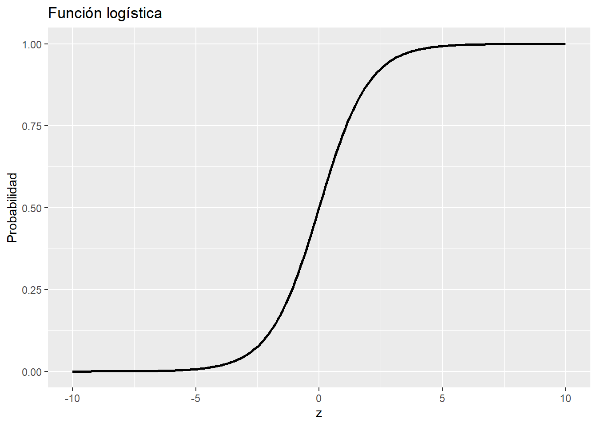

Al finalizar este capítulo, el lector será capaz de:
Explicar qué es un problema de clasificación binaria.
Comprender la idea intuitiva de la regresión logística.
Diferenciar entre probabilidad predicha y clase predicha.
Dividir una base de datos en entrenamiento y prueba.
Ajustar un modelo de regresión logística en R.
Construir una matriz de confusión.
Calcular exactitud, sensibilidad y especificidad.
Interpretar los resultados básicos de un modelo logístico.
Reconocer algunas limitaciones de la regresión logística.
4.2 Introducción
En los capítulos anteriores preparamos y exploramos una base real de accidentes de tránsito.
Ahora daremos un paso importante: construiremos nuestro primer modelo supervisado de clasificación.
El problema que vamos a estudiar es el siguiente:
¿Podemos estimar la probabilidad de que un accidente de tránsito tenga víctimas?
La variable que queremos predecir es:
accidente_con_victimas
Esta variable tiene dos categorías:
Con víctimas
Solo daños
Por lo tanto, estamos frente a un problema de clasificación binaria.
La regresión logística es uno de los modelos más utilizados para este tipo de problemas. Aunque tiene la palabra “regresión” en su nombre, se usa frecuentemente para clasificación.
4.3 Clasificación binaria
Un problema de clasificación binaria es aquel donde la variable respuesta tiene solo dos posibles clases.
Algunos ejemplos son:
Problema
Clase 1
Clase 2
Accidente de tránsito
Con víctimas
Solo daños
Diagnóstico médico
Enfermo
Sano
Crédito bancario
Incumple
No incumple
Correo electrónico
Spam
No spam
Calidad del aire
Alta contaminación
Baja contaminación
En nuestro caso, la clase de interés será:
Con víctimas
Es decir, nos interesa estimar la probabilidad de que un accidente pertenezca a esa clase.
4.4 ¿Por qué no usar regresión lineal?
Supongamos que codificamos la variable respuesta así:
1 = Con víctimas
0 = Solo daños
Podríamos pensar en ajustar un modelo de regresión lineal común. Sin embargo, esto presenta un problema importante.
La regresión lineal puede producir predicciones menores que 0 o mayores que 1.
Pero una probabilidad debe estar entre 0 y 1.
Por ejemplo, no tendría sentido decir:
La probabilidad de accidente con víctimas es 1.27
o:
La probabilidad de accidente con víctimas es -0.15
Para evitar este problema usamos la regresión logística, que transforma la salida del modelo para obtener valores entre 0 y 1.
4.5 Idea intuitiva de la regresión logística
La regresión logística no predice directamente una clase.
Primero predice una probabilidad.
Por ejemplo, para un accidente determinado, el modelo podría estimar:
Probabilidad de accidente con víctimas = 0.72
Después usamos un punto de corte para convertir esa probabilidad en una clase.
Por ejemplo, si usamos un punto de corte de 0.5:
Si probabilidad >= 0.5 → Con víctimas
Si probabilidad < 0.5 → Solo daños
Entonces:
0.72 → Con víctimas
0.18 → Solo daños
Esta distinción es muy importante:
La regresión logística produce probabilidades; la clasificación final depende del punto de corte elegido.
4.6 La función logística
La regresión logística utiliza una función especial llamada función logística.
Esta función tiene forma de “S” y convierte cualquier número real en un valor entre 0 y 1.
Matemáticamente, se escribe así:
[ p = ]
donde:
[ z = _0 + _1x_1 + _2x_2 + + _px_p ]
En esta expresión:
(p) es la probabilidad predicha.
(x_1, x_2, , x_p) son las variables predictoras.
(_0) es el intercepto.
(_1, _2, , _p) son los coeficientes del modelo.
La ventaja de esta función es que, sin importar el valor de (z), el resultado siempre estará entre 0 y 1.
4.7 Visualización de la función logística
Veamos la forma de la función logística.
Code
z <-seq(-10, 10, length.out =200)p <-1/ (1+exp(-z))datos_logistica <-data.frame(z = z, p = p)library(ggplot2)ggplot(datos_logistica, aes(x = z, y = p)) +geom_line(linewidth =1) +labs(title ="Función logística",x ="z",y ="Probabilidad" )

La gráfica muestra que la probabilidad se acerca a 0 para valores muy negativos de (z), y se acerca a 1 para valores muy positivos.
4.8 Cargar paquetes
En este capítulo utilizaremos los siguientes paquetes:
Code
library(readr)library(dplyr)library(ggplot2)
Si alguno no está instalado, puedes instalarlo con:
Code
install.packages(c("readr", "dplyr", "ggplot2"))
4.9 Cargar la base preparada
Usaremos la base preparada en el capítulo 2:
datos/atus_ml_preparado.csv
Definimos la ruta:
Code
ruta_atus_ml <-"datos/atus_ml_preparado.csv"
Verificamos que exista:
Code
file.exists(ruta_atus_ml)
[1] TRUE
Cargamos la base:
Code
if (file.exists(ruta_atus_ml)) { atus_ml <-read_csv( ruta_atus_ml,show_col_types =FALSE )print("Base preparada cargada correctamente.")} else { atus_ml <-NULLprint("No se encontró el archivo datos/atus_ml_preparado.csv. Ejecuta primero el capítulo 2.")}
[1] "Base preparada cargada correctamente."
4.10 Preparar variables para el modelo
Para la regresión logística necesitamos preparar la variable respuesta.
if (exists("modelo_logistico")) {summary(modelo_logistico)}
Call:
glm(formula = victimas_binaria ~ MES + ID_HORA + DIASEMANA +
TIPACCID + CAUSAACCI, family = binomial, data = entrenamiento)
Coefficients: (1 not defined because of singularities)
Estimate Std. Error z value
(Intercept) 18.107257 101.847193 0.178
MES02 -0.045766 0.029756 -1.538
MES03 -0.032191 0.029273 -1.100
MES04 -0.002838 0.029455 -0.096
MES05 -0.015409 0.029067 -0.530
MES06 -0.054753 0.029837 -1.835
MES07 -0.076297 0.030352 -2.514
MES08 -0.094050 0.029971 -3.138
MES09 -0.077109 0.030150 -2.557
MES10 -0.154152 0.029797 -5.173
MES11 -0.106385 0.029508 -3.605
MES12 -0.111889 0.029593 -3.781
ID_HORA -0.001039 0.001025 -1.015
DIASEMANAJueves -0.248317 0.022530 -11.022
DIASEMANAlunes -0.219442 0.022072 -9.942
DIASEMANAMartes -0.266295 0.022564 -11.801
DIASEMANAMiercoles -0.297457 0.022631 -13.144
DIASEMANASabado -0.145669 0.021142 -6.890
DIASEMANAViernes -0.234956 0.021860 -10.748
TIPACCIDCertificado cero -35.365952 108.599964 -0.326
TIPACCIDColisión con animal -18.408433 101.847115 -0.181
TIPACCIDColisión con ciclista -17.466499 101.847083 -0.171
TIPACCIDColisión con ferrocarril -18.516007 101.847193 -0.182
TIPACCIDColisión con motocicleta -17.993904 101.847076 -0.177
TIPACCIDColisión con objeto fijo -19.631828 101.847078 -0.193
TIPACCIDColisión con peatón (atropellamiento) -0.014823 111.314486 0.000
TIPACCIDColisión con vehículo automotor -20.213142 101.847076 -0.198
TIPACCIDIncendio -21.789442 101.848323 -0.214
TIPACCIDOtro -19.371321 101.847096 -0.190
TIPACCIDSalida del camino -18.895003 101.847080 -0.186
TIPACCIDVolcadura -17.704426 101.847078 -0.174
CAUSAACCIConductor -0.282824 0.157369 -1.797
CAUSAACCIFalla del vehículo -0.547420 0.167821 -3.262
CAUSAACCIMala condición del camino -0.097472 0.162233 -0.601
CAUSAACCIOtra -0.093819 0.169144 -0.555
CAUSAACCIPeatón o pasajero NA NA NA
Pr(>|z|)
(Intercept) 0.858889
MES02 0.124035
MES03 0.271467
MES04 0.923240
MES05 0.596036
MES06 0.066492 .
MES07 0.011946 *
MES08 0.001701 **
MES09 0.010543 *
MES10 2.30e-07 ***
MES11 0.000312 ***
MES12 0.000156 ***
ID_HORA 0.310343
DIASEMANAJueves < 2e-16 ***
DIASEMANAlunes < 2e-16 ***
DIASEMANAMartes < 2e-16 ***
DIASEMANAMiercoles < 2e-16 ***
DIASEMANASabado 5.58e-12 ***
DIASEMANAViernes < 2e-16 ***
TIPACCIDCertificado cero 0.744687
TIPACCIDColisión con animal 0.856567
TIPACCIDColisión con ciclista 0.863833
TIPACCIDColisión con ferrocarril 0.855738
TIPACCIDColisión con motocicleta 0.859763
TIPACCIDColisión con objeto fijo 0.847149
TIPACCIDColisión con peatón (atropellamiento) 0.999894
TIPACCIDColisión con vehículo automotor 0.842681
TIPACCIDIncendio 0.830594
TIPACCIDOtro 0.849152
TIPACCIDSalida del camino 0.852819
TIPACCIDVolcadura 0.861996
CAUSAACCIConductor 0.072303 .
CAUSAACCIFalla del vehículo 0.001107 **
CAUSAACCIMala condición del camino 0.547964
CAUSAACCIOtra 0.579123
CAUSAACCIPeatón o pasajero NA
---
Signif. codes: 0 '***' 0.001 '**' 0.01 '*' 0.05 '.' 0.1 ' ' 1
(Dispersion parameter for binomial family taken to be 1)
Null deviance: 252832 on 273438 degrees of freedom
Residual deviance: 181229 on 273404 degrees of freedom
AIC: 181299
Number of Fisher Scoring iterations: 16
4.14 Interpretación inicial del resumen
El resumen del modelo muestra los coeficientes estimados.
Cada coeficiente indica cómo cambia el logaritmo de las razones de momios, conocido como log-odds, cuando cambia una variable predictora.
En esta primera lectura no nos enfocaremos todavía en interpretar todos los coeficientes, porque varias variables son categóricas y generan muchas categorías.
Lo importante por ahora es entender que el modelo estima una relación entre las variables predictoras y la probabilidad de que el accidente tenga víctimas.
Más adelante podemos profundizar en la interpretación mediante los odds ratios.
4.15 Predicción de probabilidades
Ahora usaremos el modelo para predecir sobre el conjunto de prueba.
if (exists("prueba")) {head( prueba |>select(accidente_con_victimas, probabilidad_victimas, prediccion_05) )}
# A tibble: 6 × 3
accidente_con_victimas probabilidad_victimas prediccion_05
<chr> <dbl> <fct>
1 Solo daños 0.0685 Solo daños
2 Solo daños 0.116 Solo daños
3 Con víctimas 1.000 Con víctimas
4 Solo daños 0.111 Solo daños
5 Solo daños 0.111 Solo daños
6 Solo daños 0.0632 Solo daños
4.17 Matriz de confusión
La matriz de confusión compara las clases reales contra las clases predichas.
La exactitud mide la proporción total de predicciones correctas.
La sensibilidad mide la proporción de accidentes con víctimas que el modelo detecta correctamente.
La especificidad mide la proporción de accidentes de solo daños que el modelo clasifica correctamente.
En problemas desbalanceados, la exactitud puede ser engañosa.
Por ejemplo, como en esta base hay muchos más accidentes de solo daños, un modelo que prediga siempre “Solo daños” podría obtener una exactitud alta, pero una sensibilidad muy baja.
En nuestro problema, la sensibilidad es muy importante porque nos interesa detectar accidentes con víctimas.
4.20 Problema del punto de corte 0.5
En muchos problemas desbalanceados, usar un punto de corte de 0.5 puede no ser adecuado.
¿Por qué?
Porque si la clase positiva es poco frecuente, muchas probabilidades predichas pueden quedar por debajo de 0.5.
Esto puede provocar que el modelo prediga casi siempre la clase mayoritaria.
Bajar el punto de corte normalmente aumenta la sensibilidad, porque el modelo clasifica más casos como “Con víctimas”.
Sin embargo, esto también puede disminuir la especificidad, porque algunos accidentes de solo daños pueden clasificarse incorrectamente como accidentes con víctimas.
Este intercambio es común en clasificación:
Mayor sensibilidad → más detección de positivos, pero más falsos positivos.
Mayor especificidad → menos falsos positivos, pero más positivos no detectados.
La elección del punto de corte depende del problema.
En un problema de seguridad vial, puede ser preferible detectar más accidentes con víctimas, aunque eso aumente algunos falsos positivos.
4.24 Distribución de probabilidades predichas
Ahora analizamos cómo se distribuyen las probabilidades predichas por el modelo.
Code
if (exists("prueba")) {ggplot(prueba, aes(x = probabilidad_victimas, fill = accidente_con_victimas)) +geom_histogram(bins =30, alpha =0.7, position ="identity") +labs(title ="Distribución de probabilidades predichas",x ="Probabilidad predicha de accidente con víctimas",y ="Frecuencia",fill ="Clase real" )}
4.25 Interpretación de las probabilidades
Si el modelo separara perfectamente las clases, esperaríamos que:
los accidentes de solo daños tuvieran probabilidades cercanas a 0;
los accidentes con víctimas tuvieran probabilidades cercanas a 1.
En datos reales, especialmente con variables limitadas, suele haber mucho traslape.
Ese traslape significa que hay accidentes con características similares pero resultados distintos.
Esto no necesariamente indica que el modelo esté “mal”, sino que el fenómeno puede ser complejo y que quizá necesitamos mejores variables.
4.26 Odds ratios
Los coeficientes de la regresión logística están en escala logarítmica de momios.
Para interpretarlos de manera más directa, podemos transformarlos con la función exponencial.
Code
if (exists("modelo_logistico")) { odds_ratios <-exp(coef(modelo_logistico)) odds_ratios}
(Intercept)
7.309402e+07
MES02
9.552658e-01
MES03
9.683213e-01
MES04
9.971660e-01
MES05
9.847096e-01
MES06
9.467188e-01
MES07
9.265412e-01
MES08
9.102377e-01
MES09
9.257885e-01
MES10
8.571414e-01
MES11
8.990784e-01
MES12
8.941439e-01
ID_HORA
9.989611e-01
DIASEMANAJueves
7.801123e-01
DIASEMANAlunes
8.029666e-01
DIASEMANAMartes
7.662134e-01
DIASEMANAMiercoles
7.427043e-01
DIASEMANASabado
8.644442e-01
DIASEMANAViernes
7.906058e-01
TIPACCIDCertificado cero
4.372826e-16
TIPACCIDColisión con animal
1.012323e-08
TIPACCIDColisión con ciclista
2.596545e-08
TIPACCIDColisión con ferrocarril
9.090763e-09
TIPACCIDColisión con motocicleta
1.532311e-08
TIPACCIDColisión con objeto fijo
2.978553e-09
TIPACCIDColisión con peatón (atropellamiento)
9.852867e-01
TIPACCIDColisión con vehículo automotor
1.665497e-09
TIPACCIDIncendio
3.443225e-10
TIPACCIDOtro
3.864937e-09
TIPACCIDSalida del camino
6.223066e-09
TIPACCIDVolcadura
2.046753e-08
CAUSAACCIConductor
7.536524e-01
CAUSAACCIFalla del vehículo
5.784403e-01
CAUSAACCIMala condición del camino
9.071282e-01
CAUSAACCIOtra
9.104479e-01
CAUSAACCIPeatón o pasajero
NA
Estos valores se conocen como odds ratios o razones de momios.
Un odds ratio mayor que 1 indica que la variable aumenta los momios de la clase positiva, comparado con una categoría de referencia.
Un odds ratio menor que 1 indica que la variable disminuye los momios de la clase positiva, comparado con una categoría de referencia.
4.27 Nota sobre la interpretación de odds ratios
Cuando hay variables categóricas, R elige automáticamente una categoría de referencia.
Los coeficientes de las demás categorías se interpretan en comparación con esa categoría base.
Por eso, interpretar odds ratios requiere saber cuál es la categoría de referencia.
En esta primera aproximación, nuestro objetivo principal es entender el flujo completo:
datos → modelo → probabilidades → clases → matriz de confusión → métricas
En capítulos posteriores podremos profundizar más en interpretación estadística.
4.28 Limitaciones del modelo
La regresión logística es un modelo muy útil, pero tiene limitaciones.
Algunas de ellas son:
supone una relación lineal entre las variables predictoras y el logit;
puede verse afectada por variables categóricas con muchas categorías;
puede tener dificultades con relaciones complejas o no lineales;
requiere cuidado cuando las clases están muy desbalanceadas;
no captura automáticamente interacciones complejas entre variables.
En nuestro caso, el modelo usa pocas variables y no incluye información espacial, condiciones del camino, tipo de vehículo, edad de conductores ni otros factores que podrían ser relevantes.
Por lo tanto, este modelo debe verse como un primer modelo base, no como un modelo definitivo.
4.29 ¿Qué aprendimos?
En este capítulo construimos nuestro primer modelo supervisado de clasificación.
Aprendimos que:
la regresión logística se usa para problemas de clasificación binaria;
el modelo produce probabilidades;
las probabilidades se convierten en clases usando un punto de corte;
el punto de corte afecta las métricas;
la matriz de confusión permite evaluar el desempeño;
la exactitud puede ser engañosa en bases desbalanceadas;
la sensibilidad y la especificidad ayudan a entender mejor el modelo;
los odds ratios permiten interpretar coeficientes en términos de momios.
4.30 Conclusión
La regresión logística es uno de los modelos más importantes en aprendizaje automático aplicado.
Aunque es relativamente simple, permite construir modelos interpretables y útiles para problemas de clasificación binaria.
En este capítulo la usamos para estimar la probabilidad de que un accidente tenga víctimas.
En el siguiente capítulo estudiaremos otro método de clasificación muy intuitivo: k vecinos más cercanos, conocido como k-NN.
Source Code
# Regresión logística para clasificación```{r}#| include: falseknitr::opts_chunk$set(warning =FALSE,message =FALSE)```## Objetivos del capítuloAl finalizar este capítulo, el lector será capaz de:- Explicar qué es un problema de clasificación binaria.- Comprender la idea intuitiva de la regresión logística.- Diferenciar entre probabilidad predicha y clase predicha.- Dividir una base de datos en entrenamiento y prueba.- Ajustar un modelo de regresión logística en R.- Construir una matriz de confusión.- Calcular exactitud, sensibilidad y especificidad.- Interpretar los resultados básicos de un modelo logístico.- Reconocer algunas limitaciones de la regresión logística.## IntroducciónEn los capítulos anteriores preparamos y exploramos una base real de accidentes de tránsito.Ahora daremos un paso importante: construiremos nuestro primer modelo supervisado de clasificación.El problema que vamos a estudiar es el siguiente:> ¿Podemos estimar la probabilidad de que un accidente de tránsito tenga víctimas?La variable que queremos predecir es:```textaccidente_con_victimas```Esta variable tiene dos categorías:```textCon víctimasSolo daños```Por lo tanto, estamos frente a un problema de **clasificación binaria**.La regresión logística es uno de los modelos más utilizados para este tipo de problemas. Aunque tiene la palabra “regresión” en su nombre, se usa frecuentemente para clasificación.## Clasificación binariaUn problema de clasificación binaria es aquel donde la variable respuesta tiene solo dos posibles clases.Algunos ejemplos son:| Problema | Clase 1 | Clase 2 ||---|---|---|| Accidente de tránsito | Con víctimas | Solo daños || Diagnóstico médico | Enfermo | Sano || Crédito bancario | Incumple | No incumple || Correo electrónico | Spam | No spam || Calidad del aire | Alta contaminación | Baja contaminación |En nuestro caso, la clase de interés será:```textCon víctimas```Es decir, nos interesa estimar la probabilidad de que un accidente pertenezca a esa clase.## ¿Por qué no usar regresión lineal?Supongamos que codificamos la variable respuesta así:```text1 = Con víctimas0 = Solo daños```Podríamos pensar en ajustar un modelo de regresión lineal común. Sin embargo, esto presenta un problema importante.La regresión lineal puede producir predicciones menores que 0 o mayores que 1.Pero una probabilidad debe estar entre 0 y 1.Por ejemplo, no tendría sentido decir:```textLa probabilidad de accidente con víctimas es 1.27```o:```textLa probabilidad de accidente con víctimas es -0.15```Para evitar este problema usamos la **regresión logística**, que transforma la salida del modelo para obtener valores entre 0 y 1.## Idea intuitiva de la regresión logísticaLa regresión logística no predice directamente una clase.Primero predice una probabilidad.Por ejemplo, para un accidente determinado, el modelo podría estimar:```textProbabilidad de accidente con víctimas = 0.72```Después usamos un punto de corte para convertir esa probabilidad en una clase.Por ejemplo, si usamos un punto de corte de 0.5:```textSi probabilidad >= 0.5 → Con víctimasSi probabilidad < 0.5 → Solo daños```Entonces:```text0.72 → Con víctimas0.18 → Solo daños```Esta distinción es muy importante:> La regresión logística produce probabilidades; la clasificación final depende del punto de corte elegido.## La función logísticaLa regresión logística utiliza una función especial llamada **función logística**.Esta función tiene forma de “S” y convierte cualquier número real en un valor entre 0 y 1.Matemáticamente, se escribe así:\[p = \frac{1}{1 + e^{-z}}\]donde:\[z = \beta_0 + \beta_1x_1 + \beta_2x_2 + \cdots + \beta_px_p\]En esta expresión:- \(p\) es la probabilidad predicha.- \(x_1, x_2, \ldots, x_p\) son las variables predictoras.- \(\beta_0\) es el intercepto.- \(\beta_1, \beta_2, \ldots, \beta_p\) son los coeficientes del modelo.La ventaja de esta función es que, sin importar el valor de \(z\), el resultado siempre estará entre 0 y 1.## Visualización de la función logísticaVeamos la forma de la función logística.```{r}z <-seq(-10, 10, length.out =200)p <-1/ (1+exp(-z))datos_logistica <-data.frame(z = z, p = p)library(ggplot2)ggplot(datos_logistica, aes(x = z, y = p)) +geom_line(linewidth =1) +labs(title ="Función logística",x ="z",y ="Probabilidad" )```La gráfica muestra que la probabilidad se acerca a 0 para valores muy negativos de \(z\), y se acerca a 1 para valores muy positivos.## Cargar paquetesEn este capítulo utilizaremos los siguientes paquetes:```{r}library(readr)library(dplyr)library(ggplot2)```Si alguno no está instalado, puedes instalarlo con:```{r, eval=FALSE}install.packages(c("readr", "dplyr", "ggplot2"))```## Cargar la base preparadaUsaremos la base preparada en el capítulo 2:```textdatos/atus_ml_preparado.csv```Definimos la ruta:```{r}ruta_atus_ml <-"datos/atus_ml_preparado.csv"```Verificamos que exista:```{r}file.exists(ruta_atus_ml)```Cargamos la base:```{r}if (file.exists(ruta_atus_ml)) { atus_ml <-read_csv( ruta_atus_ml,show_col_types =FALSE )print("Base preparada cargada correctamente.")} else { atus_ml <-NULLprint("No se encontró el archivo datos/atus_ml_preparado.csv. Ejecuta primero el capítulo 2.")}```## Preparar variables para el modeloPara la regresión logística necesitamos preparar la variable respuesta.Crearemos una variable numérica llamada:```textvictimas_binaria```con la siguiente codificación:```text1 = Con víctimas0 = Solo daños``````{r}if (!is.null(atus_ml)) { atus_modelo <- atus_ml |>mutate(victimas_binaria =ifelse(accidente_con_victimas =="Con víctimas", 1, 0),MES =as.factor(MES),DIASEMANA =as.factor(DIASEMANA),TIPACCID =as.factor(TIPACCID),CAUSAACCI =as.factor(CAUSAACCI),ID_HORA =as.numeric(ID_HORA) )}```Revisamos las primeras filas:```{r}if (exists("atus_modelo")) {head(atus_modelo)}```Verificamos la distribución de la variable respuesta:```{r}if (exists("atus_modelo")) {table(atus_modelo$victimas_binaria)}```También revisamos la variable original:```{r}if (exists("atus_modelo")) {table(atus_modelo$accidente_con_victimas)}```## Selección inicial de variables predictorasPara nuestro primer modelo usaremos las siguientes variables:```textMESID_HORADIASEMANATIPACCIDCAUSAACCI```La fórmula del modelo será:```textvictimas_binaria ~ MES + ID_HORA + DIASEMANA + TIPACCID + CAUSAACCI```Esto significa que intentaremos estimar la probabilidad de que un accidente tenga víctimas usando información temporal y descriptiva del accidente.## División en entrenamiento y pruebaAntes de entrenar el modelo, dividimos los datos en dos partes:- conjunto de entrenamiento,- conjunto de prueba.El conjunto de entrenamiento se usa para ajustar el modelo.El conjunto de prueba se usa para evaluar el desempeño del modelo con datos que no se usaron para entrenarlo.Usaremos 70% de los datos para entrenamiento y 30% para prueba.```{r}if (exists("atus_modelo")) {set.seed(123) n <-nrow(atus_modelo) indices_entrenamiento <-sample(1:n,size =round(0.7* n) ) entrenamiento <- atus_modelo[indices_entrenamiento, ] prueba <- atus_modelo[-indices_entrenamiento, ]}```Revisamos el tamaño de cada conjunto:```{r}if (exists("entrenamiento") &&exists("prueba")) {nrow(entrenamiento)nrow(prueba)}```También revisamos si la proporción de clases se mantiene razonablemente parecida en ambos conjuntos.```{r}if (exists("entrenamiento") &&exists("prueba")) {round(100*prop.table(table(entrenamiento$accidente_con_victimas)), 2)round(100*prop.table(table(prueba$accidente_con_victimas)), 2)}```## Ajustar el modelo de regresión logísticaEn R, la regresión logística se ajusta con la función `glm()`.La opción importante es:```textfamily = binomial```Esto le indica a R que queremos ajustar un modelo logístico para una respuesta binaria.```{r}if (exists("entrenamiento")) { modelo_logistico <-glm( victimas_binaria ~ MES + ID_HORA + DIASEMANA + TIPACCID + CAUSAACCI,data = entrenamiento,family = binomial )}```Revisamos el resumen del modelo:```{r}if (exists("modelo_logistico")) {summary(modelo_logistico)}```## Interpretación inicial del resumenEl resumen del modelo muestra los coeficientes estimados.Cada coeficiente indica cómo cambia el logaritmo de las razones de momios, conocido como **log-odds**, cuando cambia una variable predictora.En esta primera lectura no nos enfocaremos todavía en interpretar todos los coeficientes, porque varias variables son categóricas y generan muchas categorías.Lo importante por ahora es entender que el modelo estima una relación entre las variables predictoras y la probabilidad de que el accidente tenga víctimas.Más adelante podemos profundizar en la interpretación mediante los **odds ratios**.## Predicción de probabilidadesAhora usaremos el modelo para predecir sobre el conjunto de prueba.Primero obtenemos probabilidades:```{r}if (exists("modelo_logistico") &&exists("prueba")) { prueba$probabilidad_victimas <-predict( modelo_logistico,newdata = prueba,type ="response" )}```Revisamos algunas predicciones:```{r}if (exists("prueba")) {head( prueba |>select(accidente_con_victimas, victimas_binaria, probabilidad_victimas) )}```La columna `probabilidad_victimas` indica la probabilidad estimada de que el accidente tenga víctimas.## De probabilidades a clasesPara convertir probabilidades en clases, usamos un punto de corte.Comenzaremos con el punto de corte clásico:```text0.5```La regla será:```textSi probabilidad >= 0.5 → Con víctimasSi probabilidad < 0.5 → Solo daños``````{r}if (exists("prueba")) { prueba$prediccion_05 <-ifelse( prueba$probabilidad_victimas >=0.5,"Con víctimas","Solo daños" ) prueba$prediccion_05 <-factor( prueba$prediccion_05,levels =c("Con víctimas", "Solo daños") )}```Revisamos las primeras predicciones:```{r}if (exists("prueba")) {head( prueba |>select(accidente_con_victimas, probabilidad_victimas, prediccion_05) )}```## Matriz de confusiónLa matriz de confusión compara las clases reales contra las clases predichas.```{r}if (exists("prueba")) { matriz_confusion_05 <-table(Real = prueba$accidente_con_victimas,Predicho = prueba$prediccion_05 ) matriz_confusion_05}```La matriz de confusión permite identificar:- verdaderos positivos,- falsos positivos,- verdaderos negativos,- falsos negativos.En nuestro caso, consideraremos como clase positiva:```textCon víctimas```## Métricas de evaluaciónA partir de la matriz de confusión podemos calcular varias métricas.Para evitar confusiones, primero extraemos los valores de la matriz.```{r}if (exists("matriz_confusion_05")) { VP <- matriz_confusion_05["Con víctimas", "Con víctimas"] FN <- matriz_confusion_05["Con víctimas", "Solo daños"] FP <- matriz_confusion_05["Solo daños", "Con víctimas"] VN <- matriz_confusion_05["Solo daños", "Solo daños"] VP FN FP VN}```Donde:- **VP**: verdaderos positivos.- **FN**: falsos negativos.- **FP**: falsos positivos.- **VN**: verdaderos negativos.Calculamos la exactitud:```{r}if (exists("VP")) { exactitud <- (VP + VN) / (VP + FN + FP + VN) exactitud}```Calculamos la sensibilidad:```{r}if (exists("VP")) { sensibilidad <- VP / (VP + FN) sensibilidad}```Calculamos la especificidad:```{r}if (exists("VP")) { especificidad <- VN / (VN + FP) especificidad}```## Interpretación de las métricasLa **exactitud** mide la proporción total de predicciones correctas.La **sensibilidad** mide la proporción de accidentes con víctimas que el modelo detecta correctamente.La **especificidad** mide la proporción de accidentes de solo daños que el modelo clasifica correctamente.En problemas desbalanceados, la exactitud puede ser engañosa.Por ejemplo, como en esta base hay muchos más accidentes de solo daños, un modelo que prediga siempre “Solo daños” podría obtener una exactitud alta, pero una sensibilidad muy baja.En nuestro problema, la sensibilidad es muy importante porque nos interesa detectar accidentes con víctimas.## Problema del punto de corte 0.5En muchos problemas desbalanceados, usar un punto de corte de 0.5 puede no ser adecuado.¿Por qué?Porque si la clase positiva es poco frecuente, muchas probabilidades predichas pueden quedar por debajo de 0.5.Esto puede provocar que el modelo prediga casi siempre la clase mayoritaria.Por eso, conviene probar otros puntos de corte.## Clasificación con punto de corte 0.3Ahora usaremos un punto de corte más bajo:```text0.3``````{r}if (exists("prueba")) { prueba$prediccion_03 <-ifelse( prueba$probabilidad_victimas >=0.3,"Con víctimas","Solo daños" ) prueba$prediccion_03 <-factor( prueba$prediccion_03,levels =c("Con víctimas", "Solo daños") )}```Calculamos la matriz de confusión:```{r}if (exists("prueba")) { matriz_confusion_03 <-table(Real = prueba$accidente_con_victimas,Predicho = prueba$prediccion_03 ) matriz_confusion_03}```Calculamos las métricas:```{r}if (exists("matriz_confusion_03")) { VP_03 <- matriz_confusion_03["Con víctimas", "Con víctimas"] FN_03 <- matriz_confusion_03["Con víctimas", "Solo daños"] FP_03 <- matriz_confusion_03["Solo daños", "Con víctimas"] VN_03 <- matriz_confusion_03["Solo daños", "Solo daños"] exactitud_03 <- (VP_03 + VN_03) / (VP_03 + FN_03 + FP_03 + VN_03) sensibilidad_03 <- VP_03 / (VP_03 + FN_03) especificidad_03 <- VN_03 / (VN_03 + FP_03)data.frame(punto_corte =0.3,exactitud = exactitud_03,sensibilidad = sensibilidad_03,especificidad = especificidad_03 )}```## Comparación de puntos de corteAhora comparamos los resultados usando dos puntos de corte:- 0.5- 0.3```{r}if (exists("exactitud") &&exists("exactitud_03")) { comparacion_cortes <-data.frame(punto_corte =c(0.5, 0.3),exactitud =c(exactitud, exactitud_03),sensibilidad =c(sensibilidad, sensibilidad_03),especificidad =c(especificidad, especificidad_03) ) comparacion_cortes}```## Interpretación de los puntos de corteBajar el punto de corte normalmente aumenta la sensibilidad, porque el modelo clasifica más casos como “Con víctimas”.Sin embargo, esto también puede disminuir la especificidad, porque algunos accidentes de solo daños pueden clasificarse incorrectamente como accidentes con víctimas.Este intercambio es común en clasificación:```textMayor sensibilidad → más detección de positivos, pero más falsos positivos.Mayor especificidad → menos falsos positivos, pero más positivos no detectados.```La elección del punto de corte depende del problema.En un problema de seguridad vial, puede ser preferible detectar más accidentes con víctimas, aunque eso aumente algunos falsos positivos.## Distribución de probabilidades predichasAhora analizamos cómo se distribuyen las probabilidades predichas por el modelo.```{r}if (exists("prueba")) {ggplot(prueba, aes(x = probabilidad_victimas, fill = accidente_con_victimas)) +geom_histogram(bins =30, alpha =0.7, position ="identity") +labs(title ="Distribución de probabilidades predichas",x ="Probabilidad predicha de accidente con víctimas",y ="Frecuencia",fill ="Clase real" )}```## Interpretación de las probabilidadesSi el modelo separara perfectamente las clases, esperaríamos que:- los accidentes de solo daños tuvieran probabilidades cercanas a 0;- los accidentes con víctimas tuvieran probabilidades cercanas a 1.En datos reales, especialmente con variables limitadas, suele haber mucho traslape.Ese traslape significa que hay accidentes con características similares pero resultados distintos.Esto no necesariamente indica que el modelo esté “mal”, sino que el fenómeno puede ser complejo y que quizá necesitamos mejores variables.## Odds ratiosLos coeficientes de la regresión logística están en escala logarítmica de momios.Para interpretarlos de manera más directa, podemos transformarlos con la función exponencial.```{r}if (exists("modelo_logistico")) { odds_ratios <-exp(coef(modelo_logistico)) odds_ratios}```Estos valores se conocen como **odds ratios** o razones de momios.Un odds ratio mayor que 1 indica que la variable aumenta los momios de la clase positiva, comparado con una categoría de referencia.Un odds ratio menor que 1 indica que la variable disminuye los momios de la clase positiva, comparado con una categoría de referencia.## Nota sobre la interpretación de odds ratiosCuando hay variables categóricas, R elige automáticamente una categoría de referencia.Los coeficientes de las demás categorías se interpretan en comparación con esa categoría base.Por eso, interpretar odds ratios requiere saber cuál es la categoría de referencia.En esta primera aproximación, nuestro objetivo principal es entender el flujo completo:```textdatos → modelo → probabilidades → clases → matriz de confusión → métricas```En capítulos posteriores podremos profundizar más en interpretación estadística.## Limitaciones del modeloLa regresión logística es un modelo muy útil, pero tiene limitaciones.Algunas de ellas son:- supone una relación lineal entre las variables predictoras y el logit;- puede verse afectada por variables categóricas con muchas categorías;- puede tener dificultades con relaciones complejas o no lineales;- requiere cuidado cuando las clases están muy desbalanceadas;- no captura automáticamente interacciones complejas entre variables.En nuestro caso, el modelo usa pocas variables y no incluye información espacial, condiciones del camino, tipo de vehículo, edad de conductores ni otros factores que podrían ser relevantes.Por lo tanto, este modelo debe verse como un primer modelo base, no como un modelo definitivo.## ¿Qué aprendimos?En este capítulo construimos nuestro primer modelo supervisado de clasificación.Aprendimos que:- la regresión logística se usa para problemas de clasificación binaria;- el modelo produce probabilidades;- las probabilidades se convierten en clases usando un punto de corte;- el punto de corte afecta las métricas;- la matriz de confusión permite evaluar el desempeño;- la exactitud puede ser engañosa en bases desbalanceadas;- la sensibilidad y la especificidad ayudan a entender mejor el modelo;- los odds ratios permiten interpretar coeficientes en términos de momios.## ConclusiónLa regresión logística es uno de los modelos más importantes en aprendizaje automático aplicado.Aunque es relativamente simple, permite construir modelos interpretables y útiles para problemas de clasificación binaria.En este capítulo la usamos para estimar la probabilidad de que un accidente tenga víctimas.En el siguiente capítulo estudiaremos otro método de clasificación muy intuitivo: **k vecinos más cercanos**, conocido como **k-NN**.